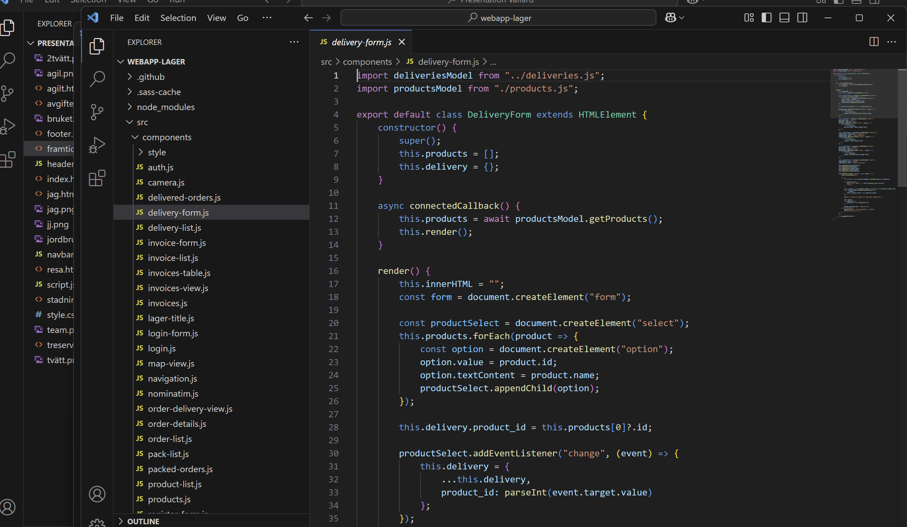

Mitt i arbetet med att modernisera och digitalisera våra verksamheter ser jag också möjligheten att i framtiden kunna bygga egna lösningar – särskilt när vi arbetar i moderna system med öppna API:er. Det ger oss större flexibilitet och möjliggör att anpassa systemen ännu mer efter verksamhetens faktiska behov.
Digitalisering är inte ett projekt – det är en resa som pågår över tid, där varje steg bygger på det förra.
Den här presentationen är en egenbyggd webbsida – skapad från grunden i kod. Det speglar verkligen vem jag är som person och hur jag jobbar: strukturerat, digitalt och med fokus på funktion och tydlighet.
